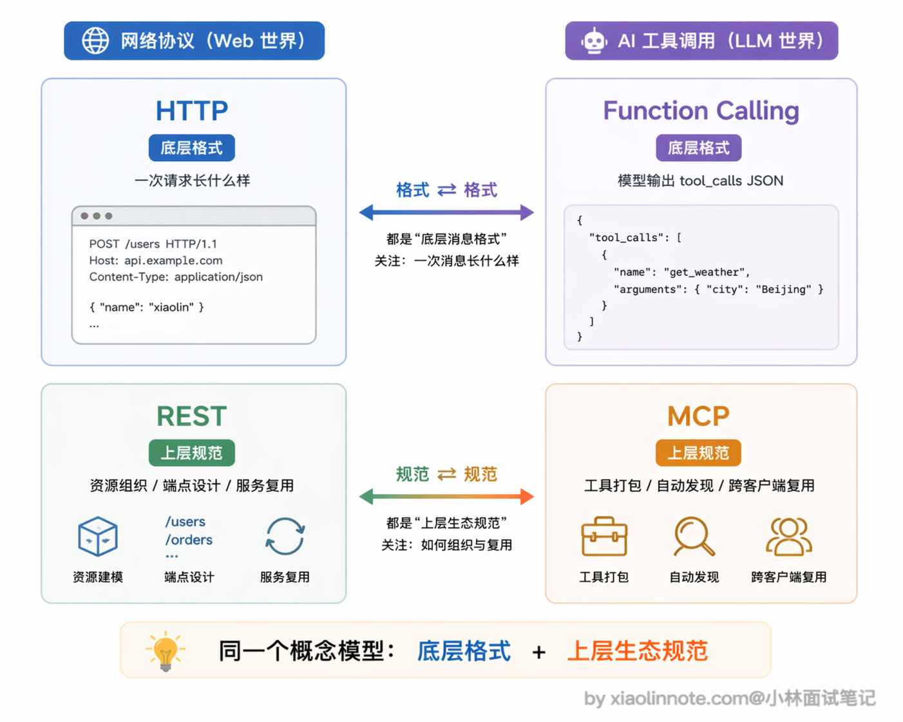
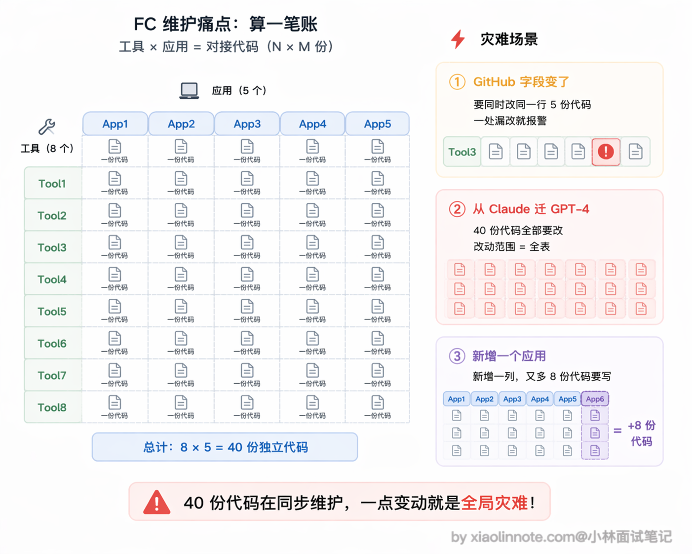
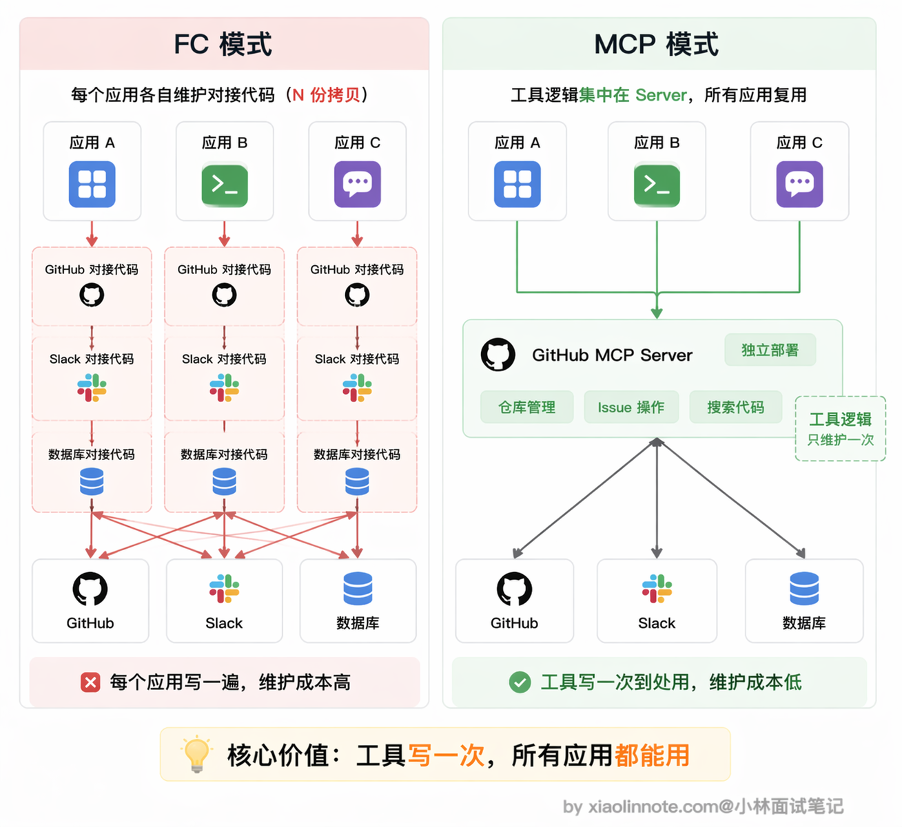
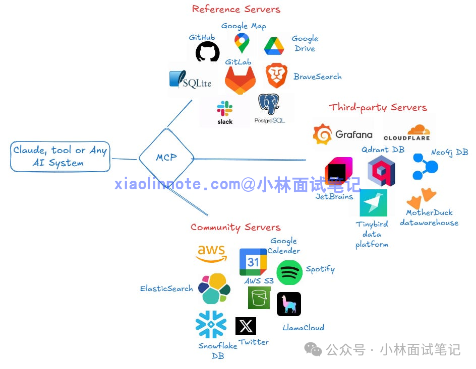
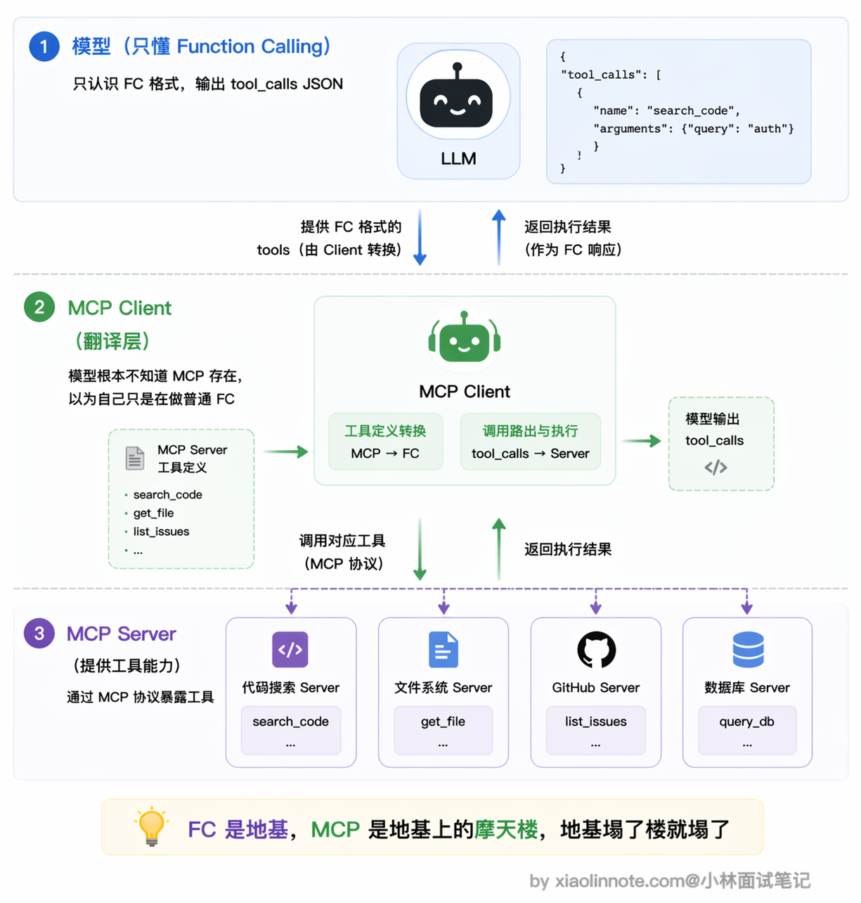
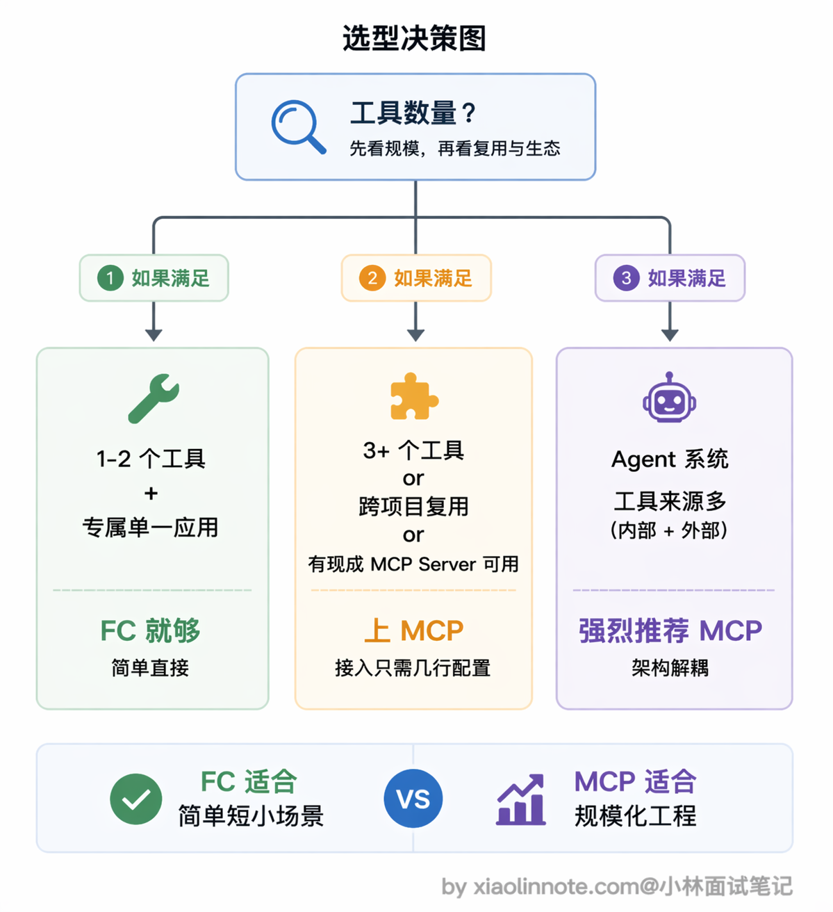

MCP 和 Function Calling 有什么区别？有没有实际跑过 MCP？
👔面试官：来聊聊 MCP 和 Function Calling 的区别吧。
🙋♂️我：MCP 就是 Function Calling 的升级版嘛，MCP 出来之后 Function Calling 就被淘汰了，以后工具调用都走 MCP 就行了。
👔面试官：淘汰？MCP 底层靠什么驱动的你知道吗？它可离不开 Function Calling。这两个根本不是同一层面的东西，你把层次搞混了。
🙋♂️我：哦，那 MCP 应该就是给 Function Calling 包了一层壳吧？功能上没什么本质区别，就是写法不一样而已？
👔面试官：如果只是写法不一样，Anthropic 为什么要专门设计一个协议出来？Function Calling 解决的是单次调用的格式问题，MCP 解决的是工具怎么标准化管理、跨项目复用和自动发现的问题，两者的抽象层次完全不同。你真跑过 MCP 吗？接入一个 MCP Server 需要写多少代码，你知道吗？
看来这两个概念的层次关系确实容易搞混，下面我把它们各自解决什么问题、怎么配合工作的逻辑理清楚。
💡 简要回答
我理解这两者不是竞争关系，解决的不是同一层面的问题。
Function Calling 是「调用语言」，定义的是模型怎么表达「我要调哪个函数、参数是什么」；MCP 是「工具生态协议」，定义的是工具怎么标准化打包、注册和被 AI 客户端发现。
MCP 底层其实还是用 Function Calling 来触发工具调用，只是在它之上加了一套工具管理框架，让工具实现一次、到处复用。
打个比方：Function Calling 像 HTTP 请求格式，MCP 像 REST API 的设计规范加服务注册发现机制，两者是不同层次的东西。
关于实际跑过的经验，我用 Claude Desktop 配过文件系统和 GitHub 的 MCP Server，在配置文件里加几行就能用，Claude 会自动发现工具，完全不用写对接代码。
📝 详细解析
Function Calling 有了，为什么还需要 MCP？
很多人第一次看到 MCP 会有一个直觉困惑：Function Calling 不是已经能调工具了吗，模型想用工具直接定义 schema 就行，为什么还要再搞一个协议出来？
这个困惑的根源，是把「能调工具」和「管好工具」混在一起了。这两件事完全是不同层次的问题。
有一个很好的类比可以帮你理解：HTTP 协议出来之后，我们已经能在网络上传数据了，为什么还需要 REST API 规范？

因为 HTTP 解决的是「怎么传」（一次请求长什么样、用什么方法、怎么编码），REST 解决的是「怎么组织和管理」（资源怎么命名、端点怎么设计、状态怎么表达、多个服务之间怎么复用同一套约定），两者是不同层次的事。
Function Calling 和 MCP 也是同样的关系：Function Calling 管「一次函数调用请求长什么样」，MCP 管「一堆工具怎么被组织、发现、跨项目复用」。前者是格式，后者是规范+生态约定，少了谁这套机制都运转不起来。
Function Calling 解决的是「一次调用」的格式问题
从开发者视角看，Function Calling 回答的是这几个问题：工具定义用什么格式传给模型？模型想调工具时怎么表达「我要调哪个函数、参数是什么」？工具执行结果怎么喂回对话？
它定义的是单次调用的消息格式，仅此而已。每次使用，开发者都要手动写工具的 schema 定义，手动写调用逻辑，手动处理结果。Function Calling 本身没有任何工具管理、工具发现、跨项目复用的概念。
Function Calling 的痛点，每次都是一次性的
那「每次手动」到底有多痛？你可能觉得复制一份 schema 也没多大工作量，但工具一多、项目一多，问题就暴露出来了。
假设你在 A 项目里定义了 10 个工具的 schema 和对接逻辑。现在 B 项目也要用这些工具，怎么办？把那 10 个 schema 定义复制过来，把对接逻辑重写一遍。好，写完了。但 A 项目用的是 Claude API，B 项目换成了 GPT-4，两边的 Function Calling 格式不完全一样，又得各自维护一套适配代码。这还没完，如果某个工具的接口改了呢？你得去每个用到它的项目里逐一更新，漏改一处就是 bug。
把这个账算一下你就知道痛点的规模了：假设你团队里有 5 个应用，每个应用要接 8 个工具，也就是 40 份工具对接代码在维护。某天 GitHub API 的某个字段变了，你要在 5 个地方同步改，只要其中一个忘了，那个应用在凌晨报警；再假设你要从 Claude 迁到 GPT-4，这 40 份代码里的 Function Calling 格式全要重新适配一遍，整个组的季度就这么交代了。

有没有发现问题？同一个工具，换个项目就要重新对接一遍，每次都是一次性的手工活。这就是 Function Calling 解决不了的核心问题：工具的管理、复用和跨平台兼容。
MCP 解决的是「工具生态」的问题
既然痛点是「每个应用各自维护一套工具定义」，那解决思路也就很自然了：把工具做成独立的标准化服务，谁要用就来连，不用每次都重写一遍。这就是 MCP 的核心思路。
工具提供方实现一个 MCP Server，这个 Server 是一个独立运行的进程，对外暴露标准接口，告诉外界「我有哪些工具、每个工具怎么调用」。任何支持 MCP 的 AI 客户端连上来，就能自动发现和使用里面的工具，完全不需要手写任何对接代码。

这带来的改变是质的：工具只需要实现一次，所有 AI 客户端都能用。GitHub 的官方 MCP Server 写好之后，不管你用 Claude Desktop、Cursor 还是自己写的 Agent，连上去就能用，不需要各自维护一份 GitHub API 的调用代码。这才是 MCP 的真正价值。

最关键的联系，MCP 底层依然靠 Function Calling 驱动
这是很多人没想清楚的一点：MCP 不是 Function Calling 的替代品，而是建立在 Function Calling 之上的。
当 MCP Client 连上一个 Server 之后，会自动向 Server 拉取所有工具的定义（调用 list_tools 接口），然后把这些定义转换成模型原生的 Function Calling 格式传给模型。模型依然通过输出 tool_calls 来表达「我要调哪个工具」，MCP Client 再把这个请求路由到对应的 Server 去执行，拿到结果后以 tool 消息的形式喂回对话。
从模型的视角来看，它完全感知不到 MCP 的存在，它以为自己只是在做普通的 Function Calling，根本不知道背后有一套 Server 在运行。MCP 的所有「魔法」都发生在宿主程序层：工具的自动发现、schema 的格式转换、调用请求的路由、执行结果的返回，全都在这一层默默完成。
这也意味着一件事：如果模型本身不支持 Function Calling，MCP 就完全没办法用，因为这个「翻译层」失效了。

实际体验，接入一个 MCP Server
以 Claude Desktop 接入文件系统 MCP 为例。只需要编辑 claude_desktop_config.json，加入如下配置：
{
"mcpServers": {
"filesystem": {
"command": "npx",
"args": [
"-y",
"@modelcontextprotocol/server-filesystem",
"/Users/yourname/Documents"
]
}
}
}
这几行配置告诉 MCP Client：用 npx 这个命令启动文件系统 Server，把 /Users/yourname/Documents 目录作为允许访问的范围。command 和 args 组合起来就是启动 Server 进程的命令行，MCP Client 会把它作为子进程启动，通过标准输入输出和它通信。
配好之后重启 Claude Desktop，它会自动启动这个 Server 进程，自动发现里面提供的工具。然后你直接问 Claude「帮我读一下 Documents 里的 report.md」，Claude 会自动调用文件系统工具完成任务，全程你没写一行对接代码。
如果想自己写一个 MCP Server，其实也很简单。核心就三步：首先用 @app.list_tools() 装饰器告诉 Client 这个 Server 提供哪些工具及其参数格式，然后用 @app.call_tool() 装饰器实现每个工具的真实执行逻辑，最后用 stdio 方式运行，让 Client 能通过管道和它通信。
完整的代码如下：
import asyncio
from mcp.server import Server
from mcp.server.stdio import stdio_server
from mcp.types import Tool, TextContent
# 1. 创建一个 Server 实例，名字叫 "calculator"
app = Server("calculator")
# 2. 定义工具列表 (告诉 Client 我有什么功能)
@app.list_tools()
async def list_tools() -> list[Tool]:
return [
Tool(
name="add_numbers",
description="计算两个数字的和",
inputSchema={
"type": "object",
"properties": {
"a": {"type": "number", "description": "第一个数字"},
"b": {"type": "number", "description": "第二个数字"}
},
"required": ["a", "b"]
}
)
]
# 3. 实现工具的具体逻辑
@app.call_tool()
async def call_tool(name: str, arguments: dict) -> list[TextContent]:
if name == "add_numbers":
a = arguments.get("a", 0)
b = arguments.get("b", 0)
result = a + b
# 返回结果，必须是 TextContent 格式
return [
TextContent(
type="text",
text=f"计算结果: {result}"
)
]
# 如果工具名不认识，返回错误
return [TextContent(type="text", text=f"未知工具: {name}")]
# 4. 启动 Server (使用标准输入输出模式)
async def main():
async with stdio_server() as (read_stream, write_stream):
await app.run(
read_stream,
write_stream,
app.create_initialization_options()
)
if __name__ == "__main__":
asyncio.run(main())
整个 Server 加起来不超过 30 行代码，Anthropic 开源的 MCP SDK 把底层通信都封装好了。
然后编辑你的 claude_desktop_config.json，添加这个 Python 服务：
{
"mcpServers": {
"calculator": {
"command": "python",
"args": [
"/path/to/your/calculator_server.py"
]
}
}
}
注意这里的路径要改成你自己实际存放文件的绝对路径，如果你的系统中 Python 命令是 python3，也要把 command 对应改过来。
配好之后重启 Claude Desktop，直接输入「帮我算一下 25 加 17 等于多少」，Claude 就会自动调用你写的 add_numbers 工具并返回结果。整个过程你只写了工具逻辑本身，所有的通信、发现、调用路由都由 MCP 框架搞定了。
什么时候选哪个
如果只是临时给自己的应用接一两个工具，Function Calling 就够用了，简单直接，不需要引入额外的进程和协议。
但如果工具多了、需要跨项目复用、或者想直接用社区里已有的成熟 Server（GitHub、数据库、浏览器自动化都有现成的），MCP 就值得上了。接一个新工具就是在配置文件里加几行，重启后自动生效，比手写对接代码省事很多。
做 Agent 系统的话更应该考虑 MCP。工具来源杂、数量多，如果全靠手写 Function Calling 来维护，工具定义代码会散落在各处，很难管理。MCP 的自动发现和统一管理能让架构干净很多，新增工具不需要改主程序逻辑，接上 Server 就行。

🎯 面试总结
回到开头的面试对话，最大的雷就是把 MCP 当成 Function Calling 的「替代品」或「升级版」，这是很多人的第一反应，但完全搞反了两者的关系。
面试回答这道题，第一个必须说清楚的点是：Function Calling 解决的是单次调用的消息格式问题，MCP 解决的是工具生态的标准化管理和复用问题，两者是不同抽象层次的东西。
第二个关键点是：MCP 底层依然靠 Function Calling 驱动，模型根本感知不到 MCP 的存在，所有的工具发现、schema 转换、调用路由都发生在宿主程序层。
如果能再补充实际跑过 MCP 的经验就更好了，比如在 Claude Desktop 里配置过哪些 MCP Server、接入流程是什么样的，这些实操细节能让面试官看到你不是只背概念。要避免的误区是：不要说 MCP 就是「换了个写法的 Function Calling」，也不要说两者是竞争关系，它们是上下层的配合关系。